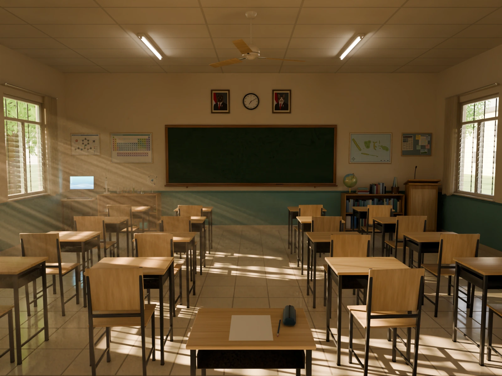

IPAatauIPS? Biar Minatmu yang Jawab.
Tes minat gratis · 3 menit
Tes minat gratis 3 menit untuk tahu kamu lebih condong ke IPA, IPS, atau dua-duanya.
Gratis · tanpa akun
SMA PLUS ADENTIFY
TES PETA MINAT
Petunjuk umum
Isi biodatamu dulu, ya.
SMA PLUS ADENTIFY
TES PETA MINAT
Lembar soal
Soal 1 dari 10
Petunjuk khusus
Pilih jawaban yang paling cocok denganmu
SMA PLUS ADENTIFY
PETA MINAT
- Nama
- Kelas/Sekolah
- Tanggal
Penjelajah